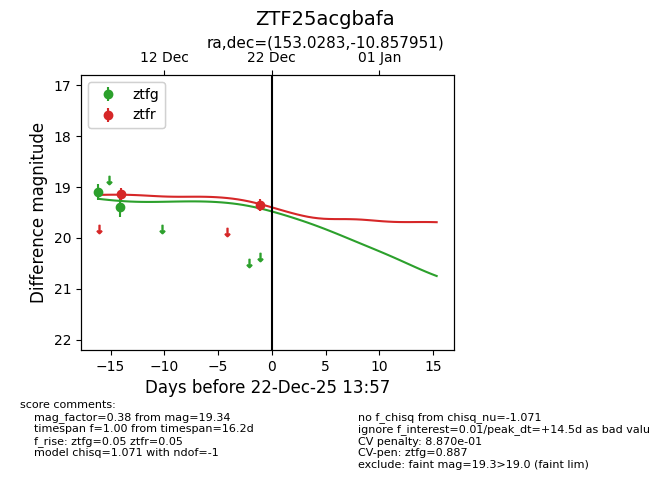
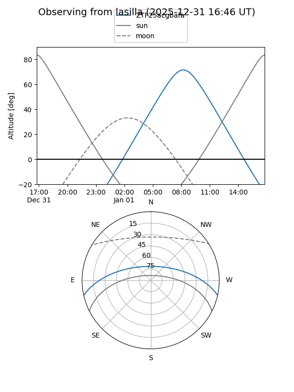
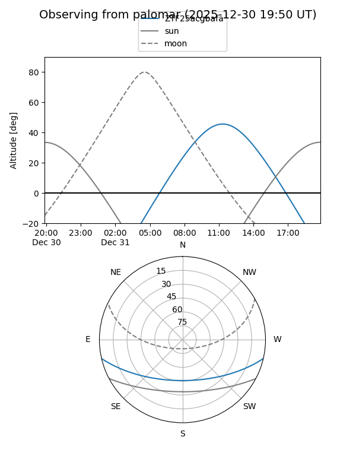
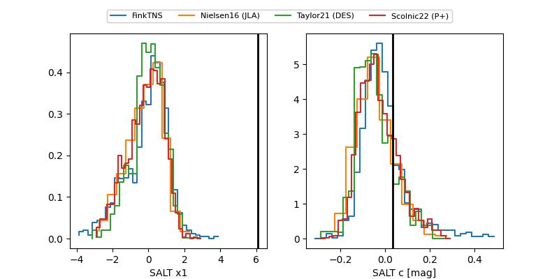

ZTF25acgbafa
Target ZTF25acgbafa at 2025-12-31 18:00
Aliases and brokers:
FINK: link
Lasair: link
ALeRCE: link
alt names
ZTF25acgbafa (ztf,fink_ztf)
Coordinates:
equatorial (ra, dec) = 153.0283,-10.85795
equatorial (HMS+DMS) = 10:12:06.79,-10:51:28.62
galactic (l, b) = (252.0497,+35.82569)
Flags:
likely cv
Photometry:
last ztfg=19.39, ztfr=19.34
2 ztfg, 2 ztfr detections
Lightcurve

Visibility


Additional plots
